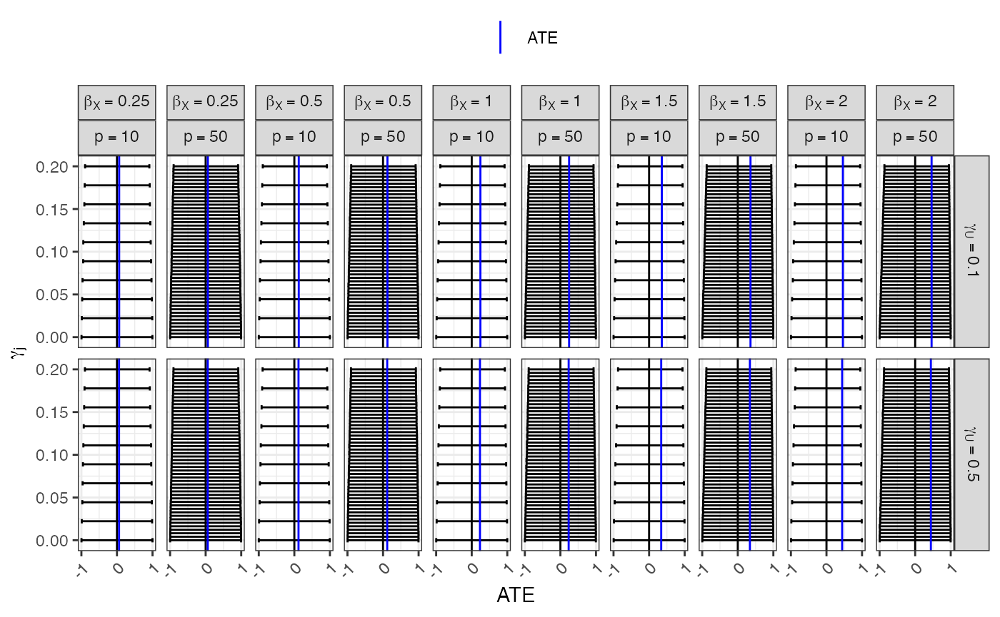
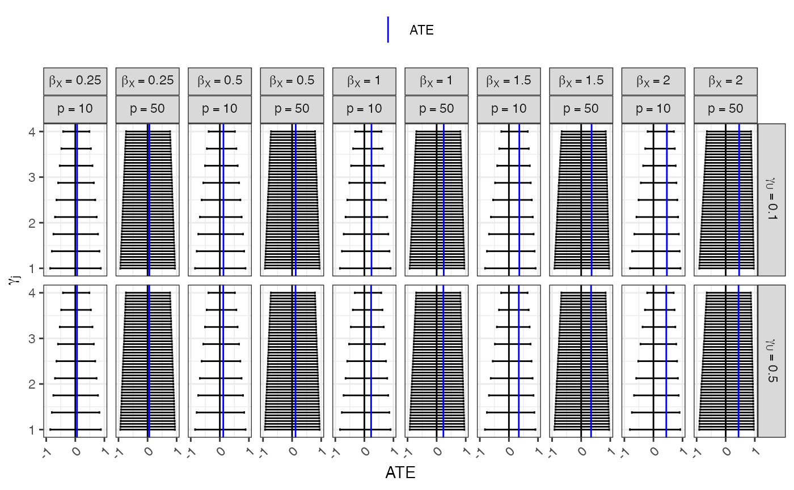
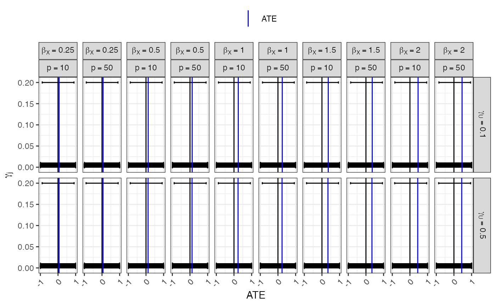
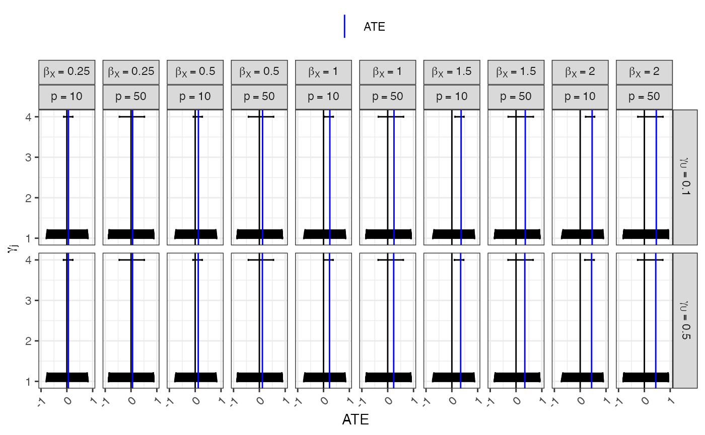

This script creates figures that illustrates the behavior of two-sample bounds when multiple IVs are present.
We first load the needed packages, read in the data created here, and unnest a few list columns.
library(tidyverse) library(ATEBounds) bounds_and_ATE <- read_rds(here::here("data/multiple_IV_sims/bounds_and_ATE.Rds")) bounds_and_ATE_unnested <- bounds_and_ATE %>% unnest(subset) %>% select(-data_file, -indIVs_on_X) %>% unnest(sums_and_bounds)
Next, we create similar figures for each of the four scenarios described here. A few interesting observations based on these plots:
In all cases, the bounds are nested in each other. As a consequence of this, intersections of bounds will simply return the bounds based on the strongest IV, and there is therefore little to gain by intersecting multiple bounds
When many IVs are present, a much larger coefficient is needed for us to be able to determine direction of the ATE.
(bounds_plot_MR <- bounds_and_ATE_unnested %>% unnest_wider(bounds) %>% filter(scenario == "MR", !many_weak) %>% mutate(U_on_XY = paste0("gamma[U]==", U_on_XY), p = factor(paste0("p==", p), levels = paste0("p==", c(10,50))), X_on_Y = paste0("beta[X]==", X_on_Y)) %>% ggplot(aes(y = indIVs_on_X)) + geom_errorbar(aes(xmin = lower, xmax = upper), width = 0.005) + geom_vline(xintercept = 0) + geom_vline(aes(xintercept = ATE, color = "ATE")) + labs( y = bquote(gamma[j]), x = "ATE", color = "" ) + scale_x_continuous(limits = c(-1,1), breaks = c(-1, 0, 1)) + scale_color_manual(values = c("ATE" = "blue")) + facet_grid(U_on_XY ~ X_on_Y + p, labeller = label_parsed) + theme_bw() + theme(legend.position = "top", axis.text.x = element_text(angle = 45, hjust = 1)))

ggsave(plot = bounds_plot_MR, filename = here::here("figures/bounds_from_multiple_IV_sims_MR.png"), dpi = 300, height = 7.5, width = 10)
(bounds_plot_power <- bounds_and_ATE %>% unnest(subset) %>% select(-data_file, -indIVs_on_X) %>% unnest(sums_and_bounds) %>% unnest_wider(bounds) %>% filter(scenario == "power", !many_weak) %>% mutate(U_on_XY = paste0("gamma[U]==", U_on_XY), p = factor(paste0("p==", p), levels = paste0("p==", c(10,50))), X_on_Y = paste0("beta[X]==", X_on_Y)) %>% ggplot(aes(y = indIVs_on_X)) + geom_errorbar(aes(xmin = lower, xmax = upper), width = 0.05) + geom_vline(xintercept = 0) + geom_vline(aes(xintercept = ATE, color = "ATE")) + labs( y = bquote(gamma[j]), x = "ATE", color = "" ) + scale_x_continuous(limits = c(-1, 1), breaks = c(-1, 0, 1)) + scale_color_manual(values = c("ATE" = "blue")) + facet_grid(U_on_XY ~ X_on_Y + p, labeller = label_parsed) + theme_bw() + theme(legend.position = "top", axis.text.x = element_text(angle = 45, hjust = 1)))

ggsave(plot = bounds_plot_power, filename = here::here("figures/bounds_from_multiple_IV_sims_power.png"), dpi = 300, height = 7.5, width = 10)
(bounds_plot_MR_many_weak <- bounds_and_ATE_unnested %>% unnest_wider(bounds) %>% filter(scenario == "MR", many_weak) %>% mutate(U_on_XY = paste0("gamma[U]==", U_on_XY), p = factor(paste0("p==", p), levels = paste0("p==", c(10,50))), X_on_Y = paste0("beta[X]==", X_on_Y)) %>% ggplot(aes(y = indIVs_on_X)) + geom_errorbar(aes(xmin = lower, xmax = upper), width = 0.005) + geom_vline(xintercept = 0) + geom_vline(aes(xintercept = ATE, color = "ATE")) + labs( y = bquote(gamma[j]), x = "ATE", color = "" ) + scale_x_continuous(limits = c(-1,1), breaks = c(-1, 0, 1)) + scale_color_manual(values = c("ATE" = "blue")) + facet_grid(U_on_XY ~ X_on_Y + p, labeller = label_parsed) + theme_bw() + theme(legend.position = "top", axis.text.x = element_text(angle = 45, hjust = 1)))

ggsave(plot = bounds_plot_MR_many_weak, filename = here::here("figures/bounds_from_multiple_IV_sims_MR_many_weak.png"), dpi = 300, height = 7.5, width = 10)
(bounds_plot_power_many_weak <- bounds_and_ATE %>% unnest(subset) %>% select(-data_file, -indIVs_on_X) %>% unnest(sums_and_bounds) %>% unnest_wider(bounds) %>% filter(scenario == "power", many_weak) %>% mutate(U_on_XY = paste0("gamma[U]==", U_on_XY), p = factor(paste0("p==", p), levels = paste0("p==", c(10,50))), X_on_Y = paste0("beta[X]==", X_on_Y)) %>% ggplot(aes(y = indIVs_on_X)) + geom_errorbar(aes(xmin = lower, xmax = upper), width = 0.05) + geom_vline(xintercept = 0) + geom_vline(aes(xintercept = ATE, color = "ATE")) + labs( y = bquote(gamma[j]), x = "ATE", color = "" ) + scale_x_continuous(limits = c(-1,1), breaks = c(-1, 0, 1)) + scale_color_manual(values = c("ATE" = "blue")) + facet_grid(U_on_XY ~ X_on_Y + p, labeller = label_parsed) + theme_bw() + theme(legend.position = "top", axis.text.x = element_text(angle = 45, hjust = 1)))

ggsave(plot = bounds_plot_power_many_weak, filename = here::here("figures/bounds_from_multiple_IV_sims_power_many_weak.png"), dpi = 300, height = 7.5, width = 10)